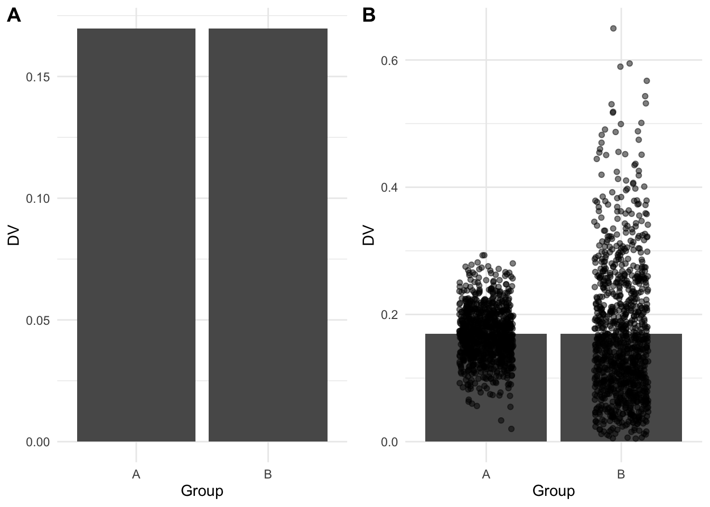

1 Data visualisation principles and workshop preparation
Welcome to the SGSSS Summer School workshop on data visualisation! In today’s session, we are going to cover:
The basic principles of data visualisation;
A very brief overview of setting up and getting started on RStudio;
The structure of the ggplot2 data visualisation package with different customisation options;
Three different types of plots for different types of data social science researchers are likely to encounter (bar plots for count data, scatterplots for correlational data, violin-boxplots for distributions, and a bonus chapter on line plots for time series data we will not cover in the workshop).
This workshop is based on PsyTeachR materials with some changes and additions specific to this workshop. The materials have been adapted from:
Nordmann, E. & DeBruine, L. (2022). Applied Data Skills (1.0). Zenodo. https://doi.org/10.5281/zenodo.6365078
Nordmann, E., McAleer, P., Toivo, W., Paterson, H. & DeBruine, L. (2022). Data visualisation using R, for researchers who don’t use R. Advances in Methods and Practices in Psychological Science, 5(2), 1-36. https://doi.org/10.1177/25152459221074654
A more comprehensive version of this tutorial can be found here: https://psyteachr.github.io/introdataviz/index.html
1.1 Data visualisation principles
Before we explore the practical side of R, we want to cover some principles behind effective data visualisation. Its useful to think about where and for whom graphs are useful. Graphs help across all research stages, from understanding your data in exploratory data analysis, to communicating your key message to your readers. However, while effective data visualisation can help to communicate your findings, it is easy to confuse or potentially mislead your readers through poorly designed graphs. These skills take time to develop and there may not always be a general rule to follow, so it is important to recognise your role as the analyst as you will always have decisions to make.
1.1.1 Graphs for you
Even if you never show a graph to your reader, exploratory data analysis is a crucial step of any research project. As you move from reading to cleaning to modelling your data, quickly making plots can help you to understand any underlying patterns. If you solely rely on statistical summaries, you may not notice these patterns.
One famous example is called Anscombe’s quartet where four variable pairs have the same statistical summary (a correlation of r = .82) but come from very different underlying patterns. The plot grid below demonstrates a scatterplot of all four pairs where you can see the line of best fit is identical. If you only relied on the correlation, you would not recognise a linear relationship is only appropriate for the first pair.
In our demonstrations, we will cover different customisation options, but you can create quick plots like these in only two or three lines of code to form a key part of your data analysis toolkit.
1.1.2 Graphs for your reader
When it is time to create visualisations for the benefit of your reader, graphs are capable of communicating your message faster and more effectively than any written summary. It is important though to balance efficiency with transparency about the underlying data. As we saw with Anscombe’s quartet, simple summaries can mask more complicated problems.
For example, you will often see bar plots in journal articles to show the difference between groups or conditions. Bar plots are great for displaying frequencies but when they are used to represent continuous data they can hide important details about the underlying data (see Weissgerber et al., 2015). The graphs below show a regular bar plot and then with the data superimposed. In the left plot (A), the two patterns of data look almost identical, but in the right plot (B), you can see they come from very different underlying distributions.

Your role as the data analyst is key here as what might be important in one type of plot or for one audience might be different in another context. It will be down to you to choose the type of plot you think is best suited to the data you are working with and the design features you choose to emphasise such as the underlying data or the comparisons you want your readers to focus on.
In the following sections, we provide a brief overview of different kinds of principles and design features to keep in mind before we introduce you to creating different plots in R later in the workshop. We could easily spend the whole workshop covering good and bad plot design, so we recommend chapter one - looking at data - from Data Visualisation by Healy (2018) and the comprehensive journal article The Science of Visual Data Communication: What Works by Franconeri et al. (2021) for further reading.
1.1.3 Common visual illusions
Your visual system is pretty powerful and allows you to rapidly search for patterns in visual information. But for the same reasons that make graphs effective at communicating information, design features can also play tricks on the visual system and create illusions. Franconeri et al. organise illusions into different graph features including position, length, area, angle, and intensity. For the purposes of our demonstration and the graphs we will use, we will focus on two problems: y-axis truncation and choice of colour combinations.
1.1.3.1 Y-axis truncation
One of the most powerful and most common illusions that can mislead people is truncated or non-zero axes, where (typically) the y-axis is shortened to zoom in on a smaller range of values. Franconeri et al. (2021) discuss studies that show people overestimate differences between two groups when you tell them the truncation is present and even if you get people to manually enter the values from each bar. For example, the bar plot below shows the same difference across the full 0 to 100 scale (A), then truncated between 45 and 60 to highlight the difference (B).

This is another area where it takes time and experience to recognise where y-axis trunctation is misleading or not. Although we are not trying to turn this into a bar plot witch hunt, as a general rule of thumb, its usually not a good idea to truncate the y-axis of a bar plot as they are meant to display frequencies with a logical zero point. On the other hand, its acceptable to truncate line plots (chapter 6) as they are designed to show changes across time. For further information on the nuances, see Correll et al. (2020) who discuss when y-axis truncation can be honest or deceptive.
1.1.3.2 Colour-vision impairments
One important design feature is how you will distinguish between different elements of your graph. Colour can be used to effectively code different groups or conditions, but many analysts do not think carefully about colour combinations. Colour-vision impairments affect a significant number of people, so it is important to consider whether someone who is colour blind could distinguish between groups/conditions and understand the message you are trying to communicate. In the plot below, on the top (A) is a scatterplot using green and purple, which can look identical for some types of colourblindness. On the bottom (B) is the same scatterplot using a colour blind friendly palette of greens.
Fortunately, it is easy to choose colour blind friendly combinations as the R package we will be using comes with different palette options designed to be easier to read with colourblindness and that you can print in greyscale. We will demonstrate how you can do this in chapter three.

1.1.4 Highlight comparisons of interest
When we move to creating graphs with multiple variables in chapters 4 and 5, you will have control over which variable you place on the x-axis and which you place on the legend. It is important to think about which comparison you want your readers to make. Comparing features is a serial process which takes time and working memory, so your readers eyes must move between the different components and consider which are higher or lower as they move around the graph. This means you should make it easier for your readers to make the key comparisons by using connectivity and proximity.
In the graph below, there are two ways of presenting the same data. In plot A, condition is on the x-axis while language is a grouping variable. In plot B, these are flipped with language on the x-axis and condition as a grouping variable. When creating this plot, you would need to consider whether you want to draw people’s attention to the comparison between language groups or between the word/non-word conditions.
If you wanted to emphasise the difference between conditions, then plot A forces people to shift their attention back and forth between non-word and word conditions across the whole plot. Compare this to plot B where the two conditions are placed side by side. In this version, it is much easier to compare the two conditions as they are proximal to each other. If you wanted to emphasise language, then the opposite would apply with plot A having language proximal to each other.

1.1.5 Integrate relevant text
Although we just demonstrated the use of a legend to help label grouping variables, these can also take up working memory when there are many labels to remember. If you only have a colour or shape to identify different bars or lines, then your reader might forget what they represent. The reader must keep cross-referencing the legend with the plot, adding to the working memory load of the comparisons you want them to make.
Below, we use a legend to plot the age group for the rate of Danish people fully vaccinated for COVID-19 over time, but we could also directly label the lines. We will demonstrate how to create the plot in chapter 6. In plot A, the lines are labelled by colour in the legend, but we must keep cross-referencing which colour relates to each age group. Particularly as the 80+ group is the top line but the bottom entry in the legend, you must keep cross-referencing the legend with the lines. Alternatively, in plot B we removed the legend and directly labelled the age groups instead for proximity of information. For added connectivity, the colour of the labels are also the same as the lines.


Keep in mind integrating text is not always possible and it will be your decision to judge whether it is more informative to use a legend or directly add labels. If there are many overlapping lines or points, adding annotations may make your plot more crowded and harder to read than including a legend. As you will see in chapter 6, for this demonstration we removed some of the younger age groups as they overlapped at the end date, making it difficult to add informative annotations. This means annotations were informative for the restricted data but a legend might have been better for the full data. This is all part of the process of deciding what works best for your project.
1.1.6 Use formats familiar to your audience
Some plot types are ubiquitous like bar and line plots. Regardless of your discipline, everyone knows how to read and interpret these plots. Data visualisations require the reader to have existing knowledge or schemas for how they expect data to be presented. When the reader knows how to interpret the plot type, they can focus on the message you are trying to communicate.
On the other hand, if your reader is unfamiliar to the data visualisation format, they must first learn how to interpret your plot before they can appreciate the message you are trying to communicate. On the workshop slides, there are two unusual plots reproduced from Franconeri et al. (2021). For example, in time series data, many people would expect your outcome to be on the y-axis and the change in time across the x-axis. When there are two outcomes, you can include two y-axes to show how the outcomes change across time which is relatively easy for people to understand.
Alternatively, a more specialised version of the plot is including the two outcomes on the x- and y-axis, and each point represents the measurement date. This means you can follow the intersection between the two outcomes as a line that wiggles across the plot. The specialised plot shows the same information but the format might not be familiar to your reader, meaning they must work out how to interpret the plot before they can appreciate the message.
As you might have expected given our repeated warnings, your choice of plot type is a compromise between what you think best communicates your message and what will be accessible to your readers. Sometimes plots are common but ill-advised like bar plots. They should not be used for continuous outcomes as we will demonstrate in chapter 5, but they are so ubiquitous that some audiences might still want them. This means it will be your judgment call on whether you use a less familiar visualisation format but feel it best communicates your data and message.
1.1.7 Guide viewers to your conceptual message
For our final point, like choosing visualisation formats familiar to your reader, it is also important to respect associations between visualisation designs and data types. When interpreting plots, people rely on schemas to interpret the information they are presented. These associations are relatively universal like top vs bottom for the position (closer to the top means a greater value) and light vs dark for luminescence (darker colours on a light background means a greater value). Similarly, plot types are designed to work with certain combinations of data, like a bar plot uses categorical variables for bars and the bar height shows frequencies or your outcome. When you go against these schemas, it can be deeply confusing for your reader.
On the workshop slides, we included a famous example that was meant to be a clever design trick, showing the number of gun deaths in Florida around the “Stand Your Ground” law enactment, but it plotted more deaths towards the bottom of the graph. This flips the general understanding that the bottom of the a graph means smaller, so on first glance it looks like there were fewer deaths after enacting the law rather than more.
This is another area where subject knowledge is important as some disciplines have their own conventions which can change over time. For example, in EEG research (Electroencephalography - where brain activity is measured with electrodes stuck to the scalp) it was conventional to plot amplitude with negative values at the top and positives values at the bottom (plot A below). This can look a little odd to those unfamiliar with EEG data and breaks conventional understanding that top means higher numbers. Over time though, this convention has changed and more studies report amplitude with positive values at the top (plot B below). This shows how conventions change over time and it is important to keep your audience in mind to make your data visualisation as accessible and intuitive as possible.

1.2 Why use R for data visualisation?
Now we have covered some principles of data visualisation, it is also important to understand why we want you to use R. Creating data visualisations by writing code (as opposed to using point-and-click software) increases the reproducibility of your work. If you write code to produce your plots, you can reuse and adapt that code in the future. Finally, using R to create data visualisations gives you control over basically every element of your plot.
We hope that this workshop will inspire you to start experimenting with R! In today’s session we are simply focusing on visualisation and don’t really touch on data wrangling (which is the most time-consuming part of any data analysis). The data you will encounter in the wild will be messier than what you see today - it’s perfectly acceptable to start by cleaning your data on software that you feel more comfortable with and simply reading the clean data into R for visualisation. However, we do recommend eventually moving onto doing all parts of the analysis in R for the reproducibility benefits outlined above. If you want to dip your toes into data wrangling, the PsyTeachR team have a wealth of materials for different levels of expertise freely available online: https://psyteachr.github.io/
1.3 Preparing for the workshop: A very short introduction to R
We will work through key features of working with R/RStudio in the workshop, but to ensure we can make the most of the time we have together, please read through this section to install R and RStudio, make sure you have all the files you need, and learn briefly how to navigate around RStudio.
1.3.1 Installing R and RStudio
If you don’t have R and RStudio installed, please follow the detailed instructions here: https://emilynordmann.github.io/workshop-dataviz/installing-r.html
Alternatively, you can create a free profile for RStudio Cloud: https://rstudio.cloud/
1.3.2 Download the workshop materials and data
We have an Open Science Framework (OSF) page where you can download all the materials for the workshop separately, so please visit this page: SGSSS Data Visualisation Workshop.
Alternatively, you can download all the files here by downloading the .zip file.
We will explain file structure and working directories in the workshop, but please create a new folder somewhere on your computer for the workshop materials. The .zip file already contains the file structure you need, but make sure you extract the files first and do not try to work with the files from within the .zip file.
You should have the two workbook .Rmd files in the main folder. This will be your working directory. You should then have the four data files within a subfolder called Data.
1.3.3 What are R and RStudio?
R is a programming language that you will write code in and RStudio is an Integrated Development Environment (IDE), which makes working in R easier. You can use R without R Studio but we wouldn’t recommend it. RStudio serves as a text editor, file manager, spreadsheet viewer, and more. The key thing to remember is that you are actually using two pieces of software, which means that from time-to-time, both of them may have separate updates.
1.3.3.1 RStudio
By default, RStudio is arranged with four window panes.

The upper left pane is the source pane, where you view, write, and edit code from files and view data in a spreadsheet format. When you first open RStudio, this pane won’t display until we open a document or load in some data.
The lower left pane is the console pane, where you can type in commands and view output messages. You can write code in the console to test it out, but it won’t be saved! You need to write your code into a script in the source pane to save it.
The right panes have several different tabs that show you information about your code. The most used tabs in the upper right pane are the Environment tab and the Help tab. The environment tab lists some information about the objects that you have defined in your code.
In the lower right pane, the most used tabs are the Files tab for directory structure, the Plots tab for plots made in a script, the Packages tab for managing add-on packages, and the Viewer tab to display reports created by your scripts. You can change the location of panes and what tabs are shown under Preferences > Pane Layout.
1.3.4 Functions
When you install R you will have access to a range of functions including options for data wrangling and statistical analysis. The functions that are included in the default installation are typically referred to as base R, and you can think of them like the default apps that come pre-loaded on your phone.
If you type a function into the console pane, it will run as soon as you hit enter. If you put the function in a script or R Markdown document, it won’t run until you run the code.
For example, the function sum() is included in base R. In the console, run the below code:
1.3.5 Arguments
Most functions require you to specify arguments in them. Arguments are basically you telling the function how you want it to run. As an example, look at the help documentation for the function sample() which randomly samples items from a list.
The help documentation for sample() should appear in the bottom right help panel. We see that sample() takes the following form:
In the arguments section, there are explanations for each of the arguments. x is the list of items we want to choose from, size is the number of items we want to choose, replace is whether or not each item may be selected more than once, and prob gives the probability that each item is chosen.
In the details section it notes that if no values are entered for replace or prob it will use defaults of FALSE (each item can only be chosen once) and NULL (all items will have equal probability of being chosen). Because there is no default value for x or size, they must be specified otherwise the code won’t run.
Let’s try an example and just change the required arguments to x and size to ask R to choose 5 random letters (letters is a built-in vector - a sequence of data - of the 26 lower-case Latin letters).
1.3.6 Objects
Objects are things you create in your code, and they can contain different things such as numbers, words, results of analyses, or dataframes. A large part of your coding will involve creating and manipulating objects. You assign content to an object using <-.
Run the following code in the console:
Try to create an object called name and enter your name, and an object called age and add your age. You need quotation marks for objects made of letters (this is called characters in R), but you won’t need them for numbers.
1.3.7 Packages
Packages are add-ons which allow you to access different functions that are not included in base R. This is done using install.packages(). This is like installing an app on your phone: you only have to do it once and the app will remain installed until you remove it. Once you launch the app, it will run in the background until you close it or restart your phone. Likewise, when you install a package, the package will be available (but not loaded) every time you open up R.
This tutorial will require you to use the ggplot2 package, which is a part of the tidyverse collection. To install it, copy and paste the below code into the console (the bottom left hand pane) and press enter to execute the code.
You should always install packages in the console and never in a script - leaving this code in your script can lead you to unintentionally install a package update you didn’t want. For this reason, avoid including install code in any script or Markdown document.
If you have R/R Studio downloaded to your computer, you have installed the tidyverse package, and you have downloaded the workshop materials, you are all set and we look forward to seeing you on the day!